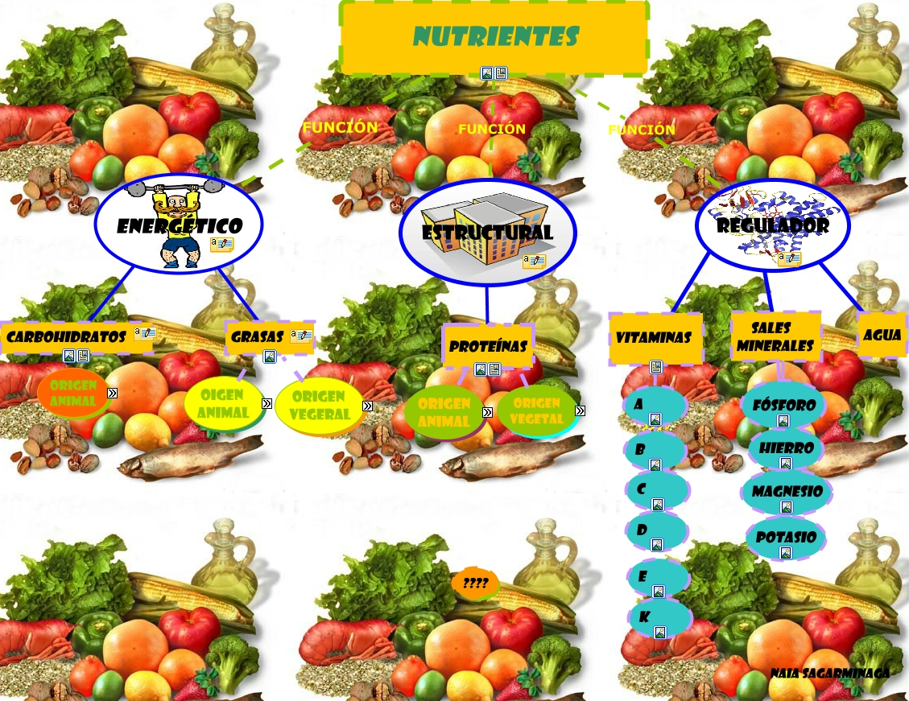

Los seres vivos pueden llevar adelante dos tipos de nutrición:
• Nutrición autótrofa.
Es el tipo de alimentación que llevan a cabo organismos que producen su propio alimento, como las plantas y algunas bacterias. Estos organismos tienen la capacidad de sintetizar sustancias simples e inorgánicas para convertirlas en sustancias orgánicas y complejas que usan en sus procesos metabólicos. Los autótrofos son llamados organismos productores y crean la materia orgánica a partir del dióxido de carbono y utilizan químicos o la luz como energía.
• Nutrición heterótrofa.
Es el tipo de alimentación que llevan a cabo organismos que se alimentan de otros para sobrevivir. En este grupo están las bacterias, los hongos (organismos descomponedores) y los animales (organismos consumidores).
PRINCIPALES NUTRIENTES
Los nutrientes son las sustancias que están presentes en los alimentos y que el organismo del ser humano utiliza para realizar sus funciones vitales.
Es importante conocer los diferentes tipos de nutrientes, los beneficios que traen al cuerpo y las funciones que cumple cada uno, para así tener una alimentación saludable y equilibrada que aporte todo lo necesario al organismo.
MACRONUTRIENTES.
Son nutrientes que el organismo requiere en grandes cantidades y son responsables de introducir energía al cuerpo.
Estos son:
• Proteínas.
Son macromoléculas que están formadas por aminoácidos y que realizan funciones vitales dentro del organismo, entre las que se destaca el desarrollo de células y tejidos.
El cuerpo está formado por distintas proteínas y cada una cumple una función específica. Por ejemplo: la queratina (desarrolla tejidos como el pelo y las uñas), la fibrina (interviene en el proceso de coagulación), la hemoglobina
(transporta oxígeno desde los pulmones al resto del cuerpo) y los anticuerpos (son parte del sistema inmunitario y protegen y combaten infecciones).
Algunos de los alimentos que aportan proteínas al organismo son: pescado, pollo, huevos, soja, carnes rojas, frutos secos, legumbres, entre otros.
• Hidratos de carbono.
Son moléculas que aportan la energía que el cuerpo necesita para realizar todas sus funciones. Los hidratos son nutrientes muy importantes para el organismo y, cuando ingresan al cuerpo, son convertidos en glucosa, que es el tipo de azúcar que permite el funcionamiento celular.
Algunos ejemplos de hidratos de carbono son: el almidón, la fructosa, la maltosa y la lactosa. Existen dos tipos principales de hidratos de carbono:
los hidratos complejos, que son de asimilación lenta, producen sensación de saciedad y están en alimentos como el arroz, las pastas, el pan, las legumbres y la papa;
y los hidratos de carbono simples, que son asimilados por el cuerpo de forma rápida, no generan sensación de saciedad y están en alimentos como el azúcar presente en frutas y verduras y el azúcar que se agrega a postres, dulces y tortas.
• Grasas.
Son lípidos que cumplen funciones fundamentales para el organismo, como la reserva de energía, la formación de las membranas de las células, la asimilación de vitaminas y la protección de órganos del cuerpo.
Existen distintos tipos de grasas (que resultan más o menos beneficiosas para el organismo):
grasas saturadas (presentes en grasa animal, lácteos, embutidos, entre otros), grasas monoinsaturadas (presentes en aceites vegetales y frutos secos), grasas poliinsaturadas
(presentes en pescados, mariscos, frutos secos y algunos aceites) y grasas trans (presentes en alimentos industrializados como barras de cereal, hamburguesas, snacks y productos congelados).
• Agua.
Es una sustancia que constituye uno de los nutrientes esenciales para la vida de los seres vivos.
Una gran porción del cuerpo humano está compuesta por este nutriente que ingresa al organismo a través de bebidas.
Además de formar parte indispensable en la composición de células y órganos, el agua cumple un rol fundamental dentro
de procesos como la transpiración, la regulación de la temperatura y la depuración de la sangre.
MICRONUTRIENTES.
Son nutrientes que el organismo requiere en pequeñas cantidades y que cumplen funciones específicas.
Estos son:
• Vitaminas.
Son 13 compuestos que el organismo necesita y que realizan funciones vitales como:
la coagulación sanguínea, el desarrollo de los huesos y tejidos, el funcionamiento del sistema nervioso,
el desarrollo de la piel y la vista, procesos como el metabolismo, el desarrollo hormonal, el desarrollo del cerebro y de los anticuerpos, entre muchas otras.
Las vitaminas son: vitamina A, D, E, K, C y B1, B2, B3, B5, B6, B7, B9, B12 y están presentes en alimentos como plátanos, huevos, pescado, carnes rojas, nueces, semillas, leche, cítricos, legumbres, cereales y verduras
(como aguacate, brócoli, zanahoria, calabaza, espinaca, entre muchas otras).
• Minerales.
Son sustancias inorgánicas, como el calcio, el potasio, el yodo, el hierro, el magnesio, el fósforo, el cloro y el sodio, que el organismo absorbe a través de alimentos.
Estos minerales participan en procesos metabólicos y tienen funciones vitales como:
el desarrollo y crecimiento de los huesos y dientes, dar estructura a los tejidos y la constitución de determinadas hormonas.
Algunos alimentos que aportan minerales a la dieta son:
productos lácteos, pescado, carnes rojas, cereales, legumbres, plátanos, frutos secos, verduras de hoja verde, entre muchos otros.
